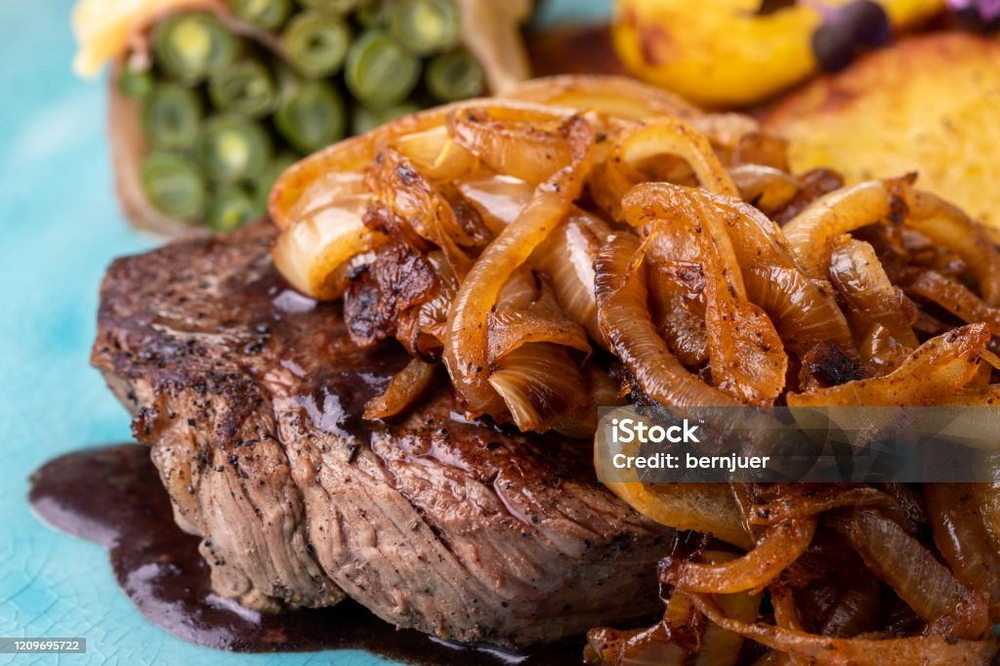
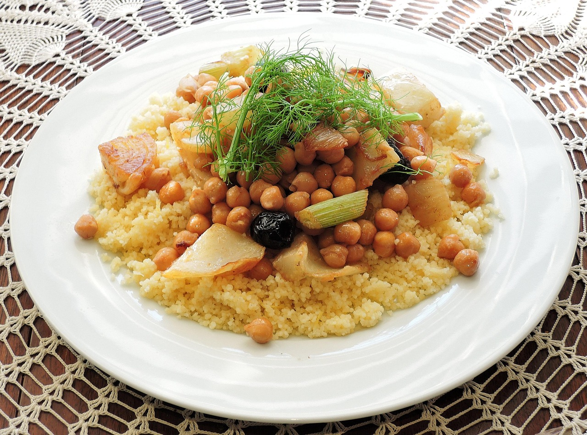
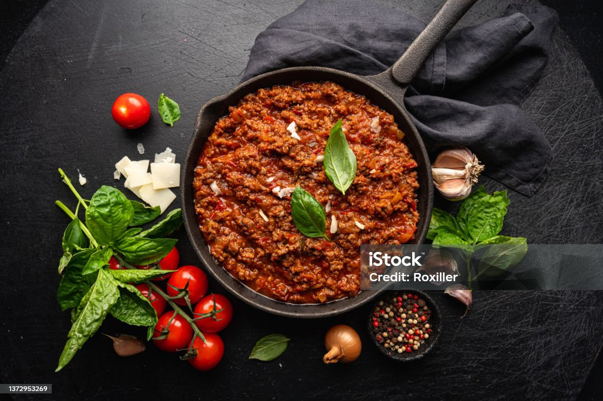
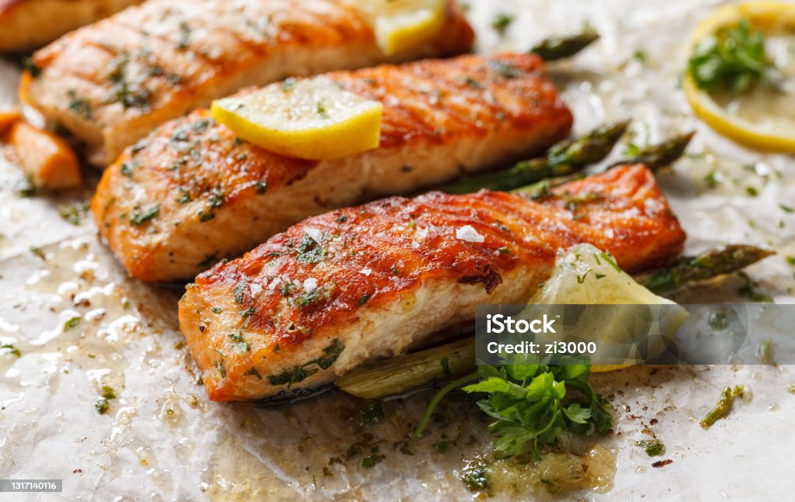

Cardápio Semanal do Refeitório
Segunda-feira

Almoço
- Arroz branco
- Feijão tradicional
- Frango grelhado
- Opção vegana: Lentilha temperada
- Sucos: Goiaba, Acerola
- Sobremesas: Gelatina, Maçã
Jantar
- Macarronada caseira
- Opção vegana: Macarrão alho e óleo
- Sucos: Maracujá, Caju
- Sobremesas: Pudim, Banana
Terça-feira

Almoço
- Arroz integral
- Feijão carioca
- Bife acebolado
- Opção vegana: Grão-de-bico temperado
- Sucos: Limão, Abacaxi
- Sobremesas: Goiabada, Mamão
Jantar
- Risoto simples
- Opção vegana: Risoto de legumes
- Sucos: Maracujá, Caju
- Sobremesas: Pudim, Maçã
Quarta-feira

Almoço
- Arroz branco
- Feijão preto
- Carne cozida
- Opção vegana: Tofu refogado
- Sucos: Melancia, Cajá
- Sobremesas: Laranja, Gelatina
Jantar
- Cuscuz com ovo
- Opção vegana: Cuscuz com legumes
- Sucos: Goiaba, Abacaxi
- Sobremesas: Pudim, Uva
Quinta-feira

Almoço
- Arroz branco
- Feijão verde
- Carne moída
- Opção vegana: Proteína de soja refogada
- Sucos: Acerola, Maracujá
- Sobremesas: Goiabada, Maçã
Jantar
- Omelete
- Opção vegana: Sopa de legumes
- Sucos: Limão, Caju
- Sobremesas: Banana, Mamão
Sexta-feira

Almoço
- Arroz branco
- Feijão carioca
- Peixe assado
- Opção vegana: Hambúrguer de grão-de-bico
- Sucos: Abacaxi, Manga
- Sobremesas: Gelatina, Maçã
Jantar
- Sopa simples
- Opção vegana: Sopa de legumes
- Sucos: Melancia, Goiaba
- Sobremesas: Pudim, Banana